3.3 Verwendung von mobilen Baumaschinen des Tiefbaus
3.3.1 Auswahl und bestimmungsgemäßer Betrieb von mobilen Baumaschinen
Falsch ausgewählte sowie nicht bestimmungsgemäß eingesetzte Maschinen führen immer wieder zu gefährlichen Situationen, Unfällen, Sachschäden und Arbeitsunterbrechungen. Berücksichtigen Sie daher bei der Auswahl von Maschinen die Arbeitsumgebung, die mit der Maschine durchzuführenden Arbeiten und die vom Hersteller in seiner Bedienungsanleitung festgelegten Einsatzgrenzen der Maschine.
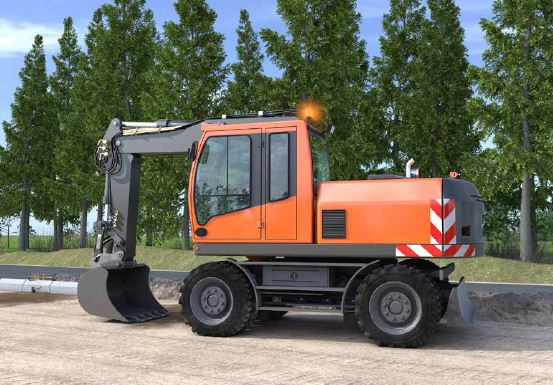
Abb. 67 Sicherheitskennzeichnung und gelbe Rundumleuchte an mobilen Baumaschinen
|
Weitere Informationen
|
- Betriebsanleitung des Herstellers
- Bekanntmachung zur Betriebssicherheit (BekBS)
|
|
Gefährdungen
|
|
Durch falsch ausgewählte Maschinen können z. B. folgende Gefährdungen entstehen:
- Maschinenumsturz durch
- nicht für vorhandene Bodenverhältnisse/Geländeneigung geeignete Maschine,
- nicht für die zu hebende Last geeignete Maschine,
- zu kleine Maschine.
- An-, Überfahren und Anschwenken durch Sichteinschränkungen
- Herabfallen von Lasten durch
- fehlende Anschlagpunkte,
- nicht geeignete Anschlagpunkte,
- unbeabsichtigtes Lösen von Anbaugeräten.
- Absturz von Personen beim Heben mit Maschinen
- Vergiftung durch Motorabgase in ganz oder teilweise geschlossenen Räumen
|
|
Maßnahmen
|
|
Setzen Sie nur Maschinen ein, welche die grundlegenden Beschaffenheitsanforderungen für Sicherheit und Gesundheitsschutz erfüllen. Sie können davon ausgehen, dass diese Anforderung erfüllt ist, wenn der Hersteller
- in der Konformitätserklärung dokumentiert, dass seine Maschine den Anforderungen der Maschinenverordnung entspricht
und
- dies durch eine CE-Konformitätskennzeichnung auf der Maschine kenntlich macht und
- eine Betriebsanleitung in deutsche Sprache zur Verfügung stellt.
Das Vorhandensein einer CE Kennzeichnung an der Maschine entbindet Sie jedoch nicht von der Pflicht zur Durchführung einer Gefährdungsbeurteilung. Hierbei sind Gefährdungen durch die Maschine selbst, die Arbeitsumgebung und die auszuführende Tätigkeit zu berücksichtigen.
Bestimmungsgemäßer Betrieb
Berücksichtigen Sie vor der Auswahl von Maschinen, dass diese nur bestimmungsgemäß betrieben werden dürfen. Der bestimmungsgemäße Betrieb ist dann gegeben, wenn
- die Betriebsanleitung bzw. Gebrauchsanleitung des Herstellers und
- die für den Betrieb maßgebenden Vorschriften und Regelwerke eingehalten werden.
 Die Betriebsanleitung muss an der Einsatzstelle vorhanden sein. Die Betriebsanleitung muss an der Einsatzstelle vorhanden sein.

Abb. 68 Grabkurve
Fehlen für den vorliegenden Einsatzfall Festlegungen in der Betriebsanleitung oder muss von ihr abgewichen werden, haben Sie als Unternehmerin oder Unternehmer die erforderlichen Maßnahmen im Rahmen der Gefährdungsbeurteilung festzulegen. Hierbei sind die
- staatlichen Regelwerke und die Regelwerke der gesetzlichen Unfallversicherung sowie die
- technischen Normen und Regelwerke, insbesondere der Stand der Technik, zu beachten.
Die festgelegten Maßnahmen sind in einer Betriebsanweisung zu dokumentieren.
Einsatz in ganz oder teilweise geschlossenen Räumen
Maßnahmen zur Vermeidung oder Reduzierung von Motorabgasen vorsehen, z. B. Einsatz von Elektroantrieb, Einsatz von Motoren mit Partikelfiltern oder Katalysatoren.
Nicht ausreichend tragfähiger Untergrund/weicher Boden
Erforderlichenfalls Maschinen mit Kettenlaufwerk statt mit Rädern einsetzen.
Arbeiten auf Mieten, Dämmen und Deichen
Setzen Sie vorrangig Maschinen mit Kettenlaufwerk statt mit Rädern ein.
Aushub tiefer Baugruben
Verwenden Sie Bagger mit ausreichend langem Ausleger, damit erforderlicher Mindestabstand zum Baugrubenrand eingehalten werden kann. Die Grabkurve aus der Betriebsanleitung muss zur Arbeitsaufgabe passen.
Heben von Lasten
Anhand der vom Hersteller erstellten Tabelle der zulässigen Hubfähigkeit (Traglasttabelle) die erforderliche Maschinengröße so ermitteln, dass die Lasten sicher gehoben werden können.
Für den Hebezeugbetrieb ausgerüstete Maschinen einsetzen, z. B. Bagger mit Überlastwarneinrichtung und Rohrbruchsicherungen an Ausleger- und Stielzylinder.
Lasthaken müssen so an der Arbeitsausrüstung oder anderen Teilen der Maschine angebracht werden, dass ein unbeabsichtigtes Aushängen des Anschlag- oder Lastaufnahmemittels vermieden wird und ein An- und Aushängen leicht und sicher möglich ist.
Sichteinschränkungen an Maschinen
Setzen Sie als Unternehmerin oder Unternehmer nur Maschinen ein, die ausreichende Sichtverhältnisse gewährleisten. Dies ist in der Regel gegeben, wenn eine im Abstand von 1 m vor, hinter oder erforderlichenfalls neben der Maschine (z. B. Bagger) in leicht gebückter oder kniender Haltung (je nach möglichen Arbeiten, z. B. Schaufelarbeiten oder Pflasterarbeiten) arbeitende Person vom Fahrer gesehen werden kann, entweder durch direkte Sicht oder z. B. durch Rückfahrkameras.
Bei Baggern bestehende Sichtverdeckungen durch den Ausleger nach rechts können durch eine zusätzliche seitliche Kamera ausgeglichen werden.
Heben von Personen
Setzen Sie nur Maschinen ein, die vom Hersteller speziell für diesen Einsatzzweck vorgesehen und ausgerüstet sind, z. B. Hubarbeitsbühnen.
Einsatz in Bereichen mit Umsturzgefahr
Verwenden Sie Maschinen mit Umsturz- oder Überrollschutz (TOPS/ROPS) und/oder Spurverbreiterung.
Einsatz in Bereichen, in denen Gegenstände von oben auf und von vorne in die Fahrerkabine fallen können (z. B. Abbrucharbeiten)
Setzen Sie Maschinen mit Schutzdach (FOPS) und Frontschutz (FGPS) ein.
Einsatz von Maschinen im öffentlichen
Verkehrsraum
Für Maschinen, die im öffentlichen Straßenverkehr eingesetzt werden, muss eine Betriebserlaubnis nach StVZO vorliegen. Wenn Sonderrechte gem. StVO in Anspruch genommen werden, sind die Maschinen mit Sicherheitskennzeichnung auszurüsten. Zusätzlich sollen sie mindestens mit einer gelben Rundumleuchte ausgestattet sein.
|
3.3.2 Qualifikation von Maschinenführern und Maschinenführerinnen
Das Führen von Baumaschinen ist eine anspruchs- und verantwortungsvolle Aufgabe. Gut qualifizierte Baumaschinenführer und Baumaschinenführerinnen arbeiten umsichtig, effizient und sicher. Sie beeinflussen nicht nur das wirtschaftliche Ergebnis der Baustelle in erheblichem Maße, sondern sind auch für den sicheren und energieeffizienten Einsatz der Maschine verantwortlich.
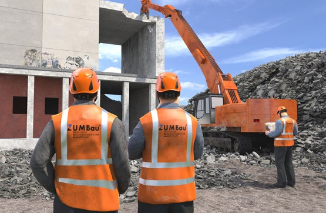
Abb. 69 Qualifikation für Maschinenbediener und Maschinenbedienerinnen
|
Gefährdungen
|
|
Durch unzureichend qualifizierte und unzureichend unterwiesene Maschinenführende kommt es immer wieder zu gefährlichen Situationen, Unfällen, Sachschäden und Arbeitsunterbrechungen. Ursache hierfür sind oft mangelnde Kenntnisse über Funktion, Einsatzgrenzen und Betriebsvorschriften der Maschine. Hieraus ergeben sich z. B. folgende Gefährdungen:
- Maschinenumsturz, Maschinenabsturz
- Anfahren/Überfahren von Personen
- Treffen von Personen beim Schwenken der Maschine
- Eingequetscht werden zwischen der Maschine und feststehenden Bauteilen, Gegenständen und Hindernissen
- Herabfallen von Lasten
- Unbeabsichtigtes Lösen und Herabfallen von Arbeitseinrichtungen bzw. Anbaugeräten
- Herabfallende Gegenstände, z. B. bei Abbrucharbeiten
- Elektrische Gefährdungen durch Berühren von Erd- oder Freileitungen sowie gefährliche Annäherung an Freileitungen
- Vergiftung durch Motorabgase
- Absturz vom Gerät bzw. von der Maschine
|
|
Maßnahmen
|
|
 Mit dem selbstständigen Führen oder Warten von mobilen Baumaschinen des Tiefbaus dürfen Sie nur Personen beauftragen die: Mit dem selbstständigen Führen oder Warten von mobilen Baumaschinen des Tiefbaus dürfen Sie nur Personen beauftragen die:
- das 18. Lebensjahr vollendet haben,
- körperlich und geistig geeignet sind,
- im Führen oder Warten der Maschine unterwiesen sind,
- ihre fachliche Eignung hierzu gegenüber dem Unternehmer oder der Unternehmerin nachgewiesen haben,
- und von denen zu erwarten ist, dass sie die ihnen übertragenen Aufgaben zuverlässig erfüllen.
Die Beauftragung hat nachvollziehbar zu erfolgen, z. B. durch einen Fahr- oder Bedienerausweis (www.bgbau.de).
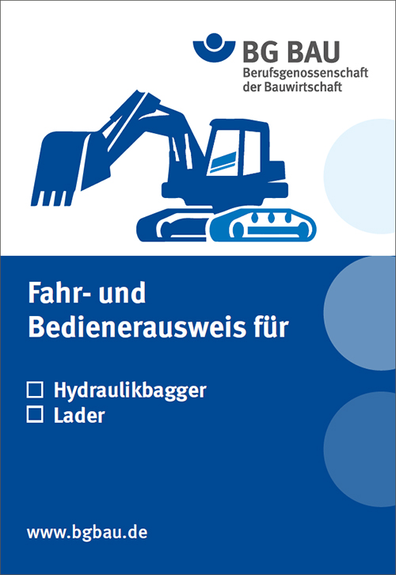
Abb. 70 Fahr- und Bedienerausweis für Hydraulikbagger und Lader
Hinweis: Bei ortsveränderlichen Kranen und Flurförderzeugen muss die Beauftragung schriftlich erfolgen.
Jugendliche unter 18 Jahren dürfen zu Ausbildungszwecken Baumaschinen unter Aufsicht führen, sofern folgende Bedingungen eingehalten werden:
- Mindestalter 16 Jahre
- Grundausbildung über den Baustellenbetrieb auf der Baustelle
- Theoretische und praktische Grundausbildung an Baumaschinen in der Ausbildungsstätte
- Anschließend praktischer Einsatz auf Baumaschinen im Baubetrieb unter Aufsicht; bei Kranen wird eine ständige Aufsicht gefordert.
 Unterweisung vor der erstmaligen Verwendung Unterweisung vor der erstmaligen Verwendung
Bevor Ihre Beschäftigten erstmalig Baumaschinen verwenden, führen Sie eine Unterweisung auf der Basis der Gefährdungsbeurteilung durch. Beziehen Sie hierbei alle Gefährdungen ein, die bei der Verwendung der Baumaschine auftreten können, und zwar von
- der Baumaschine selbst,
- der Arbeitsumgebung und
- den Arbeitsgegenständen, an denen Tätigkeiten mit der Baumaschine durchgeführt werden.
Die Unterweisung umfasst mindestens
- die konkreten, den Betrieb der Maschine betreffenden Gefährdungen,
- die von dem Maschinenführer oder der Maschinenführerin zu beachtenden Schutz- und Notfallmaßnahmen,
- die den Betrieb der Maschine betreffenden Inhalte der Vorschriften und Regeln,
- neben dem theoretischen Teil auch die praktische Unterweisung,
- Einweisung an der Maschine sowie Übungsarbeiten unter Aufsicht,
- Betriebsanweisung/-anleitung der einzusetzenden Maschinen und Anbaugeräte.
Unterweisen Sie Ihre Beschäftigten, wie Gefährdungen beim Betrieb von Maschinen vermieden werden, z. B.:
- kein Schwenken über Personen
- kein zu schnelles Fahren oder Schwenken
- Einhaltung der Mindestabstände zu Baugrubenkanten
- Sichtüberprüfung des Fahr- und Arbeitsbereichs vor der
Einleitung von Fahr- und Arbeitsbewegungen
- keine Duldung von unbefugten Personen
im Gefahrbereich
- keine Duldung von Personen im Fahrbereich der
Maschine, z. B. beim Führen von Lasten
- keine Mitnahme von Personen auf hierfür nicht vorgesehenen
Plätzen
- Benutzung des Sicherheitsgurtes
- Aktivierung von Sicherheitseinrichtungen, wie z. B. Überlastwarneinrichtung, Lastmomentbegrenzung
- Durchführen der Sicht- und Funktionsprüfung vor Beginn der Arbeitsschicht
- Melden von festgestellten Maschinenmängeln an den Aufsichtführenden
- kein Weiterbetreiben einer Maschine bei Maschinenmängeln, welche die Betriebssicherheit gefährden
- Durchführung der vom Hersteller geforderten Wartungsarbeiten
- Bei Baggern und Ladern: Absetzen der Arbeitseinrichtung in Arbeitspausen
- Sichern gegen unbeabsichtigte Bewegungen in Arbeitspausen und vor dem Verlassen des Fahrer-/Bedienplatzes
- Heben von Personen nur mit Maschinen, die vom Hersteller hierfür vorgesehen und ausgerüstet sind
- Durchführen der Kontrolle der Verriegelung von Schnellwechseleinrichtungen vor dem Einsatz
- Einhalten der Mindestabstände zu Erd- und Freileitungen
- kein Herunterspringen von der Maschine (Benutzung der vom Hersteller vorgesehenen Aufstiege)
- Bedienung der Maschine nur von einem vom Hersteller hierfür vorgesehenen Platz
- kein unnötiges Laufenlassen der Motoren
Halten Sie das Datum einer jeden Unterweisung und die Namen der Unterwiesenen schriftlich fest.
Fortlaufende Unterweisung
Unterweisen Sie Maschinenführende, die durch diese Unterweisung qualifiziert wurden, über veränderte Baustellenbedingungen, Maschinentechniken, Sicherheitsanforderungen etc. erneut, mindestens jedoch einmal jährlich.
Baumaschinen im öffentlichen Verkehr
Beim Führen von Baumaschinen im öffentlichen Verkehr gelten die Anforderungen der StVO und der Fahrerlaubnisverordnung. Je nach Masse und bauartbedingter Höchstgeschwindigkeit sind entsprechende Führerscheine erforderlich. Wichtige Hinweise zum Fahren der Baumaschine im öffentlichen Verkehr finden sich auch in der Betriebsanleitung des Herstellers.
Gleisgebundene oder Zweiwegebaumaschinen im Gleisbereich
Zum Führen von Baumaschinen im Gleisbereich können vom Bahnbetreiber zusätzliche Anforderungen an die Qualifizierung gestellt werden (z. B. Triebfahrzeugführerschein).
 Gute Praxis Gute Praxis
Zum Nachweis der fachlichen Eignung hat sich in der Bauwirtschaft die ZUMBau-Qualifikation bewährt. Diesen Qualifikationsnachweis gibt es z. B. für Turmdrehkrane, Bagger/Lader, Teleskope, Abbruchbagger, Longfrontbagger, Drehbohrgeräte/Rammen, Verdichtungsgeräte, Straßenfertiger, Aufschluss- und Brunnenbohrgeräte, Planierraupen, Grader.

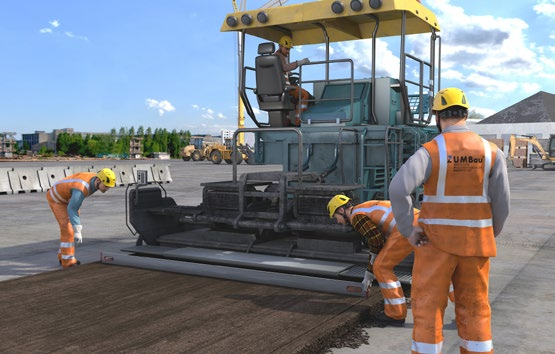
Abb. 71 Beispiel für die Prüfung zum "Geprüfter Fahrer von Straßenfertigern" nach ZUMBau – Standard
|
3.3.3 Gefahrbereiche und Sichteinschränkungen beim Betrieb von mobilen Baumaschinen
Für Personen im Gefahrbereich von Maschinen besteht das Risiko, dass sie vom Maschinenführer oder der Maschinenführerin bei Fahr- und Arbeitsbewegungen unter Umständen nicht rechtzeitig wahrgenommen werden. Sorgen Sie für ausreichende Sichtverhältnisse und koordinieren Sie Bauabläufe so, dass Personen nicht im Gefahrbereich von Maschinen arbeiten müssen.

Abb. 72 Gefahrbereich und Quetschstelle beim Betrieb von Erdbaumaschinen
|
Weitere Informationen
|
- Betriebsanleitung des Herstellers
|
|
Gefährdungen
|
|
Halten sich bei der Ausführung von Arbeiten mit mobilen Maschinen Personen in deren Umfeld auf, ergeben sich z. B. folgende Gefährdungen:
- Angefahren/Überfahren werden
- Eingequetscht werden zwischen der Maschine und feststehenden Bauteilen, Gegenständen und Hindernissen
- Getroffen werden beim Schwenken der Maschine
- Getroffen werden von herabfallenden Lasten
Gefahrbereich ist die Umgebung der Maschine, in der Personen durch arbeitsbedingte Bewegungen des Gerätes, seiner Arbeitseinrichtungen und seiner Anbaugeräte oder durch ausschwingendes Ladegut, durch herabfallendes Ladegut oder durch herabfallende Arbeitseinrichtungen erreicht werden können.
|
|
Maßnahmen
|
|
Grundsätzlich gilt:
- Der unbefugte Aufenthalt im Gefahrbereich ist verboten.
- Befinden sich Unbefugte im Gefahrbereich, hat der Maschinenführer oder die Maschinenführerin die Arbeit so lange einzustellen, bis diese den Gefahrbereich verlassen haben.
- Sind Arbeiten auszuführen, bei denen sich Personen im Gefahrbereich befinden oder diesen betreten, haben Sie als Unternehmerin oder Unternehmer besondere Schutzmaßnahmen festzulegen.
Überprüfen Sie deshalb als Unternehmerin oder Unternehmer vor dem Einsatz von mobilen Maschinen im Rahmen der Gefährdungsbeurteilung, ob die Gefährdung besteht, dass Personen angefahren, überfahren oder angeschwenkt werden können.
Berücksichtigen Sie hierbei
- die Sichtverhältnisse des Maschinenführers bzw. der Maschinenführerin,
- die Arbeits- und Fahrbewegungen der Maschine sowie
- die Arbeitsumgebung.
Ergibt sich aus dieser Überprüfung, dass
- der Maschinenführer oder die Maschinenführerin keine ausreichenden Sichtverhältnisse über den gesamten Gefahrbereich der Maschine hat, um Personen rechtzeitig zu erkennen und
- sich Personen im Gefahrbereich befinden oder diesen betreten können (Arbeitsumgebung)
so müssen Sie dafür sorgen, dass die Verwendung des Arbeitsmittels nach dem Stand der Technik sicher ist.
Lassen Sie mobile Maschinen nicht verwenden, ohne vorher diese Gefährdungsbeurteilung durchgeführt und die hieraus resultierenden Schutzmaßnahmen umgesetzt zu haben.
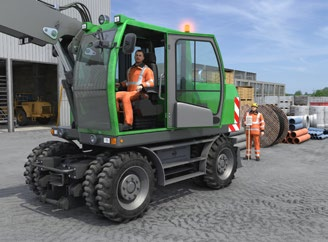
|
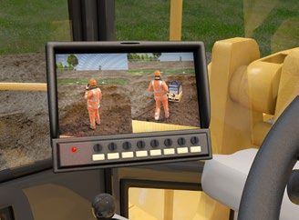
|
Abb. 73 Sichtfeldüberprüfung |
Abb. 74 Splitscreen-Monitor für Rückraum- und Seitenkamera |
Vereinfachtes Verfahren zur Überprüfung des Sichtfeldes:
Es wird überprüft, ob der Fahrer bzw. die Fahrerin eine im Abstand von 1 m vor, hinter oder erforderlichenfalls (z. B. Bagger) neben der Maschine in leicht gebückter oder kniender Haltung (je nach möglichen Arbeiten, z. B. Schaufelarbeiten oder Pflasterarbeiten) arbeitende Person sehen kann.
Kann der Fahrer oder die Fahrerin diese Person nicht oder nicht ausreichend sehen, müssen Maßnahmen ergriffen werden. Setzen Sie technische Maßnahmen zur Sichtverbesserung, z. B. Einbau von Kamera-/Monitor-Systemen oder von zusätzlichen Spiegeln, baldmöglichst um.
Beachten Sie als Unternehmerin oder Unternehmer bei der Umsetzung der technischen Maßnahmen zur Sichtverbesserung folgende Randbedingungen:
- Für Sichthilfsmittel: Monitor-Systeme oder Spiegel müssen im vorderen 180-Grad Blickfeld des Fahrers angebracht sein. Spiegel im hinteren Sichtbereich sowie Spiegel-zu-Spiegel-Systeme entsprechen nicht dem Stand der Technik.
- Sichthilfsmittel dürfen bei der Arbeit nicht durch bewegliche Teile der Maschine, z. B. Baggerarm, beeinträchtigt werden.
- Spiegel-zu-Spiegel-Systeme sind nicht zulässig.
|
Bei Nachrüstungen muss sichergestellt sein, dass dadurch eine für die Maschine erteilte Allgemeine Betriebserlaubnis (ABE) bzw. Ausnahmegenehmigung nach § 70 StVZO und § 29 StVO nicht berührt wird.
Maschinen, welche die beschriebenen Sichtkriterien nicht erfüllen, können übergangsweise betrieben werden, wenn folgende Maßnahmen getroffen werden.
- Sicherung/Absperrung des Fahr- und Arbeitsbereiches.
- Einsatz von Einweisern oder Sicherungsposten.
Sorgen Sie dafür, dass Einweisende und Sicherungsposten während des Einweisens/Sicherns keine andere Tätigkeit ausüben.
Legen Sie zusätzlich fest, dass auf Baustellen, auf denen mobile Maschinen eingesetzt werden, Warnkleidung getragen wird.
Sorgen Sie als Unternehmerin oder Unternehmer dafür, dass
- Ihre Beschäftigten die von Ihnen festgelegten Maßnahmen zu beachten haben,
- Ihre Beschäftigten vor dem Betreten des Gefahrbereichs mit dem Maschinenführer bzw. der Maschinenführerin Kontakt aufzunehmen haben, z. B. durch Handzeichen mit Sichtkontakt,
- Ihre Beschäftigten den Gefahrbereich erst nach Zustimmung des Maschinenführers bzw. der Maschinenführerin zu betreten haben,
- Ihre Beschäftigten und der Maschinenführer bzw. die Maschinenführerin die weitere Arbeitsweise miteinander abstimmen und
- der Maschinenführer bzw. die Maschinenführerin bei Gefahr für Personen die gefahrbringende Bewegung zu stoppen hat und Warnzeichen gibt.
Unterweisen Sie Ihre Beschäftigten über das richtige Verhalten und die von Ihnen festgelegten Maßnahmen, z. B. bezüglich der Sichtverhältnisse, Gefahrbereiche, Einweisende und Sicherungsposten.
Qualifizieren Sie Ihre Maschinenführenden, z. B. zum "Geprüften Bagger- und Laderfahrer" bei einer zugelassenen Prüfungsstätte, z. B. ZUMBau).
Abb. 75 ZUMBau-Logo
3.3.4 Fahrwege auf Baustellen
Die Ver- und Entsorgung von Baustellen erfolgt in der Regel durch Zulieferer über Lkw. Baustellenintern werden auch LKW, Muldenfahrzeuge (Dumper) oder Traktoren mit Anhänger zum Transport von Materialen oder Geräten eingesetzt. Gewährleisten Sie als Unternehmerin oder Unternehmer den sicheren Baustellenverkehr durch geeignete Verkehrswege und Verkehrsregeln.
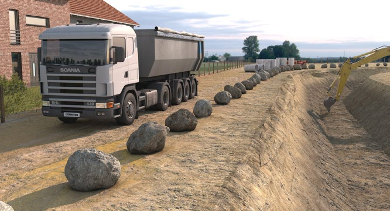
Abb. 76 Begrenzung des Fahrweges durch Freisteine
|
Weitere Informationen
|
- DIN 4124 "Baugruben und Gräben – Böschungen, Verbau, Arbeitsraumbreiten"
|
|
Gefährdungen
|
|
Bei der Verwendung von mobilen Arbeitsmitteln und Fahrzeugen auf Baustellen bestehen unter anderem Gefährdungen durch:
- Abkommen vom Fahrweg
- Umsturz
- Anfahren/Überfahren
- schlechte Beleuchtung
|
|
Maßnahmen
|
|
Fahrwege auf Baustellen
Sorgen Sie als Unternehmerin oder Unternehmer dafür, dass für die Verwendung mobiler Arbeitsmittel und Fahrzeuge auf Baustellen geeignete Verkehrswege eingerichtet und hierfür Verkehrsregeln festgelegt werden.
Für den Baustellenverkehr sind Fahrordnungen aufzustellen und Verkehrswege festzulegen. Rückwärtsfahrten vermeiden und durch Einrichten von Wendestellen soweit möglich reduzieren.
Sind Rückwärtsfahrten nicht zu vermeiden, sind zur Vermeidung von Gefährdungen für Beschäftigte folgende Maßnahmen zu ergreifen:
- Einsatz eines Kamera-Monitor-Systems oder
- Abschrankung des Gefahrbereiches oder
- Einsatz von Sicherungsposten/Einweisern.
Verkehrswege müssen ausreichend tragfähig sein und sollen möglichst gut instandgehalten sowie ohne größere Unebenheiten sein.
Die Tragfähigkeit von Fahrwegen kann z. B. durch Bodenverbesserung oder Bodenaustausch erhöht werden.
Leiten Sie Oberflächenwässer geregelt ab, so dass Unterspülungen von Fahrwegen auf Baustellen vermieden werden. Treffen Sie Vorkehrungen, damit diese auch bei schwierigen Witterungsverhältnissen, (z. B. Eis, Schnee, Nebel, starke Regenfälle) sicher befahren werden können. Sollte ein sicheres Befahren nicht gewährleistet sein, stellen Sie den Fahrbetrieb ein.
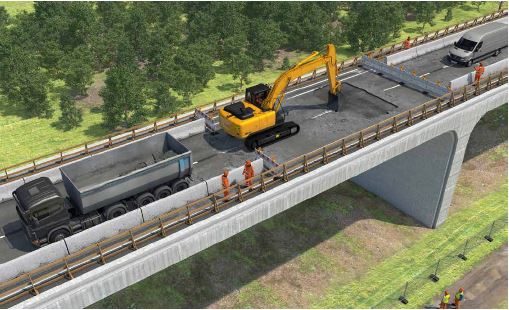
Abb. 77 Absturzsicherung für Fahrzeuge und Baumaschinen durch massive Begrenzung des Fahrweges
Werden Beförderungsmittel auf Verkehrswegen verwendet, so muss für andere, den Verkehrsweg nutzende Personen ein ausreichender Sicherheitsabstand oder geeignete Schutzvorrichtungen vorgesehen werden.
Zwischen Fahrwegen auf Baustellen und Böschungs- oder Verbaukanten sind zur Wahrung der Standsicherheit Mindestabstände einzuhalten.
Mindestabstände zu Böschungs- und Verbaukanten siehe auch DIN 4124 "Baugruben und Gräben – Böschungen, Verbau, Arbeitsraumbreiten".
Legen Sie als Unternehmerin oder Unternehmer die Abstände zu Absturzkanten so fest, dass keine Ab- bzw. Umsturzsturzgefahr besteht. Den besten Schutz bieten technisch zwangsläufig wirkende Maßnahmen, wie z. B. eine Begrenzung der Fahrwege durch Betonleitwände, Freisteine oder Erdwälle.
Werden mobile Arbeitsmittel auf Böschungen eingesetzt, an denen die Gefahr des Umstürzens oder Abrutschens der Maschine besteht, müssen besondere Sicherungsmaßnahmen durchgeführt werden. Eine besondere Sicherungsmaßnahme kann z. B. eine windengeführte Seilsicherung sein.
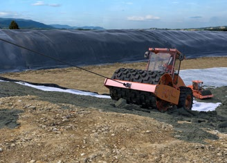
Abb. 78 Einsatz auf Böschungen

Abb. 79 Mindestabstände zwischen Fahrzeugen bzw. Baugeräten und Böschungskanten zur Wahrung der Standsicherheit
|
3.3.5 Um- und Absturzgefährdungen beim Betrieb von mobilen Baumaschinen
Die Standsicherheit von Maschinen kann durch nicht tragfähigen Untergrund, durch zu starke Neigung des Geländes und durch zu geringe Sicherheitsabstände z. B. zu Baugrubenrändern oder Böschungskanten beeinträchtigt werden. Darüber hinaus können Fehleinschätzungen und Bedienfehler wie zu schnelles Schwenken oder Fahren zu Umstürzen führen.
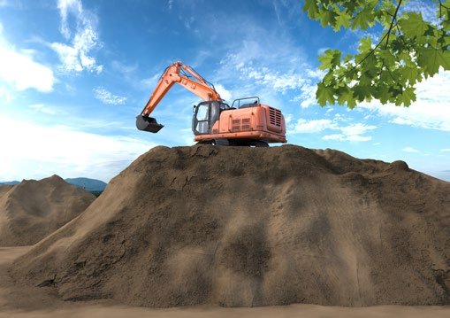
Abb. 80 Kettenbagger sind für den Einsatz auf Dämmen oder Bodenmieten geeignet
|
Rechtliche Grundlagen
|
- Betriebssicherheitsverordnung (BetrSichV), §§ 3, 4, 5
- DGUV Vorschrift 1 "Grundsätze der Prävention", §§ 2, 3
- DGUV Vorschrift 29 "Steinbrüche, Gräbereien und Halden", § 23
- DGUV Vorschrift 38 "Bauarbeiten", § 5, § 7 und § 8
- Technische Regeln für Betriebssicherheit
- DGUV Regel 100-500 bzw. 100-501 "Betreiben von Arbeitsmitteln", Kap. 2.12 "Betreiben von Erdbaumaschinen"
|
|
Weitere Informationen
|
- DGUV Information 201-053 "Einsatz von landwirtschaftlichen Traktoren auf Erdbaustellen"
- Betriebsanleitung des Herstellers
- Bekanntmachung zur Betriebssicherheit (BekBS),
|
|
Gefährdungen
|
|
Gefährdungen durch Umsturz, Absturz und Abrollen können z. B. folgende Ursachen haben:
- Maschinenumsturz durch
- nicht für vorhandene Bodenverhältnisse/Geländeneigung geeignete Maschine
- fehlende oder zu geringe Sicherheitsabstände zu Baugrubenrändern und Böschungskanten
- nicht für die zu hebende Last geeignete Maschine
- Überlastung
- zu schnelles Schwenken
- zu schnelles Fahren
- ruckartiges Beschleunigen oder Verzögern von Fahr- und Arbeitsbewegungen
- Fehleinschätzung der Kippgefahr
- Maschinenabsturz durch
- fehlende Absturzsicherung (Anfahrbarriere)
- Gefahr des Abrollens durch
- in Hangrichtung abgestellte Maschinen
- nicht eingelegte Feststellbremse
- nicht eingesetzte Unterlegkeile
|
|
Maßnahmen
|
|
Als Unternehmerin oder Unternehmer dürfen Sie nur Maschinen einsetzen, welche für die vorgesehenen Arbeitsaufgaben und Umgebungsbedingungen geeignet sind. Die Maschinen sollen bestimmungsgemäß eingesetzt werden. Die Einsatzgrenzen der Maschine (z. B. zul. Geländeneigung) sind der Betriebsanleitung des Herstellers zu entnehmen. Halten Sie diese an der Einsatzstelle vor.
Fehlen für den vorliegenden Einsatzfall Festlegungen in der Betriebsanleitung oder muss von ihr abgewichen werden, haben Sie als Unternehmerin oder Unternehmer die erforderlichen Maßnahmen im Rahmen der Gefährdungsbeurteilung festzulegen. Hierbei sind
- die staatlichen und die Regelwerke der Unfallversicherungsträger sowie die
- technischen Normen und Regelwerke,
insbesondere der Stand der Technik, zu beachten. Die festgelegten Maßnahmen sind in einer Betriebsanweisung zu dokumentieren.
Die Betriebsanweisung muss an der Einsatzstelle einsehbar sein.

|
Abb. 81
Sicherheitsgurt benutzen |
Anstelle einer Betriebsanweisung können Sie auch eine vom Hersteller mitgelieferte Bedienungsanleitung zur Verfügung stellen, wenn diese Informationen enthält, die einer Betriebsanweisung entsprechen.
Allgemeines
Setzen Sie die Maschinen so ein, dass die Standsicherheit gewährleistet ist.
- Maschinen nur auf tragfähigem Untergrund betreiben. Dabei die Einsatzgrenzen z. B. Neigungen und Bodenpressungen, beachten.
- Ungenügend tragfähiger Untergrund kann z. B. durch Bodenaustausch, Bodenverbesserung oder die Verwendung lastverteilender Platten in seiner Tragfähigkeit verbessert werden.
- Für die Bodenverhältnisse geeignete Maschine auswählen, z. B. Kettenlaufwerk bei weicherem Untergrund oder bei Arbeiten auf Deichen, Dämmen oder Bodenmieten.
- In Bereichen mit Umsturzgefahr Maschinen mit Umsturz- oder Überrollschutz (TOPS/ROPS) und/oder Spurverbreiterung einsetzen.
- Werden an Maschinen Umbauten, Anbauten oder andere Veränderungen vorgenommen, ist zu prüfen, ob diese Einfluss auf die Standsicherheit haben können. Eine Reduzierung der Standsicherheit ist nicht zulässig.
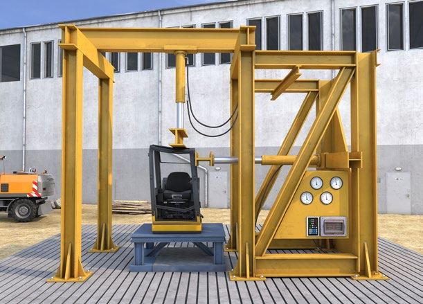
Abb. 82 Baumusterprüfung ROPS (Überrollschutzkonstruktion)
Sicherung gegen Ab-, Umstürzen und Abrollen
Legen Sie als Unternehmerin oder Unternehmer die Abstände zu Bruch-, Gruben-, Halden- und Böschungsrändern owie zu Absturzkanten so fest, dass keine Ab- bzw. Umsturzsturzgefahr besteht.
Erforderliche Abstände von Baugruben und Gräben sind in DIN 4124 "Baugruben und Gräben; Böschungen, Verbau, Arbeitsraumbreiten" genannt.
Sorgen Sie dafür, dass bei Arbeiten auf Böschungen, an denen die Gefahr des Umstürzens oder Abrutschens der Maschine besteht, besondere Sicherungsmaßnahmen durchgeführt werden. Die Sicherheit kann durch
- Einsatz geeigneter, ggf. kleinerer Maschinen (z. B. Rüttelplatten) im Randbereich,
- Überschüttung, Überprofilierung,
- windengeführte Seilsicherung der Maschinen verbessert werden.
In der Nähe von Baugruben, Schächten, Gräben, Gruben- und Böschungsrändern sowie auf geneigten Flächen sind Maschinen vor dem Abstellen oder Verlassen gegen Abrollen oder Abrutschen zu sichern.
Dies wird z. B. erreicht, wenn die Sicherung erfolgt, durch
- Einlegen der Bremsen,
- Ausfahren der Abstützvorrichtungen,
- Verwenden von Anschlagschwellen oder von Vorlegeklötzen.
Versehen Sie Kippstellen mit Absturz- bzw. Umsturzgefahr mit Einrichtungen, die das Ablaufen, Ab- und Umstürzen der Maschine verhindern.
Aushub tiefer Baugruben
Setzen Sie Bagger mit ausreichend langem Ausleger ein, damit der erforderliche Mindestabstand zum Baugrubenrand eingehalten werden kann.
|
3.3.6 Abschleppen, Verladen, Transport von Maschinen und Geräten
Beim Abschleppen, Verladen und Transport von Maschinen und Geräten des Tiefbaus können Sie selbst, Ihre Beschäftigten oder andere Verkehrsteilnehmende zu Schaden kommen. Ursache hierfür können ungeeignete Transportmittel oder eine unzureichende Ladungssicherung sein.
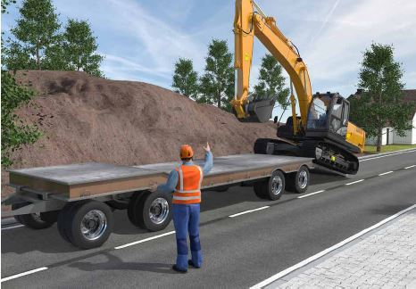
Abb. 83 Verladen eines Baggers
|
Weitere Informationen
|
- BG BAU-Broschüre "Ladungssicherung auf Fahrzeugen der Bauwirtschaft"
|
|
Gefährdungen
|
|
Beim Abschleppen, Verladen und Transportieren von Maschinen und Geräten des Tiefbaus kann es z. B. zu folgenden gefährlichen Situationen, Unfällen, Sachschäden und Arbeitsunterbrechungen kommen:
- Maschinenumsturz, Maschinenabsturz beim Befahren der Laderampen bzw. des Transportfahrzeuges
- ungewollte Bewegungen z. B. bei nicht gesicherten Oberwagen bei Baggern oder nicht gesicherter Knicklenkung bei Walzen oder Radladern
- Maschinen oder Maschinenteile rutschen oder kippen beim Transport vom Transportfahrzeug
- Anfahren/Überfahren von Personen beim Verladen oder Abschleppen
- Beim Ladevorgang eingequetscht werden zwischen der zu transportierenden Maschine und dem Transportfahrzeug
- Elektrische Gefährdungen durch Berühren von bzw. gefährliche Annäherung an Freileitungen insbesondere bei Transporten im Baustellenbereich
- Absturz vom Gerät bzw. von der Maschine
- Angefahren werden durch Teilnehmende des öffentlichen Straßenverkehrs beim Verladen auf oder neben öffentlichen
Straßen.
|
|
Maßnahmen
|
|
Allg. Hinweis zur Ladungssicherung: Beim Transport von Baumaschinen können enorme Kräfte auf die Ladung wirken. Eine Direktzurrung kann diese Kräfte zuverlässig aufnehmen. Grundvoraussetzung bei der Direktzurrung ist das Vorhandensein einer ausreichenden Anzahl von Befestigungspunkten an der Ladung, mit ausreichender Zugkraft und in handhabungsgerechter Ausführung.
Praxistipp
Fordern Sie bei Baumaschinen die sog. Verladekarte gemäß VDMA Einheitsblatt 24121 beim Hersteller an. Auf der gerätespezifischen Verladekarte sind die korrekten Zurrpunkte in verständlicher Form dargestellt.
Beauftragen Sie nur Personen mit dem Abschleppen, Verladen und Transportieren von Maschinen und Geräten des Tiefbaus, die für diese Tätigkeit unterwiesen sind.

Abb. 84 Kennzeichnung von Zurrpunkten
Sorgen Sie beim Abschleppen dafür, dass z. B.
- Maschinen nur abgeschleppt werden, wenn deren Bremsen und Lenkung funktionsfähig sind,
- das Abschleppen bzw. Bergen mit Seilen nur erfolgt, wenn die Bremsen der abzuschleppenden Maschinen funktionsfähig sind,
- das Abschleppen und Bergen von Maschinen nur mit ausreichend bemessenen Abschleppstangen oder -seilen in Verbindung mit geeigneten Einrichtungen zur Befestigung von Abschleppstangen oder -seilen an den Maschinen erfolgt,
- Abschleppstangen oder -seile ausreichend bemessen sind,
- geeignete Einrichtungen zur Befestigung von Abschleppstangen oder -seilen vorhanden sind, z. B. Abschleppkupplungen, Ösen oder Haken,
- sich im Bereich der Abschleppstange oder des Seils keine Personen aufhalten.
Abschleppstangen oder -seile sind ausreichend bemessen, wenn ihre rechnerische Bruchlast mindestens der dreifachen Zugkraft des abschleppenden Fahrzeugs oder Gerätes entspricht.
Sorgen Sie beim Verladen und Transportieren dafür, dass z. B.:
- Maschinen, ihre Anbauteile und erforderliche Hilfseinrichtungen (z. B. Rampenteile) gegen unbeabsichtigte Bewegungen (z. B. Ver- und Abrutschen des Gerätes, Verdrehen des Oberwagens, Bewegungen von Knickgelenken, Hoch- oder Herabschlagen von Teilen der Maschine, Abrollen, Umkippen) gesichert werden,
- Verladerampen, Ketten von Raupengeräten und Reifen von Mobilgeräten soweit von Schlamm, Schnee und Eis gereinigt werden, dass Rampen ohne Rutschgefahr befahren werden können,
- Rampenneigung, Rampenbreite, Rampentragfähigkeit und Rampenbelag für die transportierenden Maschinen und Geräte geeignet sind,
- Rampen standsicher sind und sich nicht ungewollt bewegen (herunterschlagen, abrutschen) können,
- zum Verladen und Transportieren von Maschinen mit Hebezeugen geeignete Anschlagmittel an den dafür vorgesehenen Anschlagstellen befestigt werden,
- knickgelenkte Maschinen nur dann mit Hebezeugen transportiert werden, wenn vorher das Knickgelenk formschlüssig gegen Bewegungen gesichert ist.
Eine Gefährdung durch Hoch- oder Herabschlagen von Teilen der Maschine ist z. B. bei mitgängergeführten Walzen mit Deichsel gegeben.
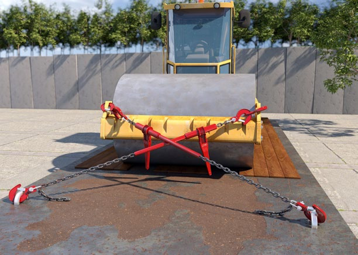
Abb. 85 Mittels Diagonalzurrung gesicherter Walzenzug
|
3.3.7 Heben und Transportieren von Lasten mit mobilen Baumaschinen
Durch die richtige Auswahl von Hebezeugen (z. B. Bagger), Lastaufnahmemitteln (z. B. Transportankersysteme) und Anschlagmitteln (z. B. Seile, Ketten) verringern Sie die Gefährdung, von Personen beim Heben von Lasten. Berücksichtigen Sie dabei die örtlichen Gegebenheiten, die Art der zu hebenden Lasten und die Bedienungsanleitungen der Hersteller.

|
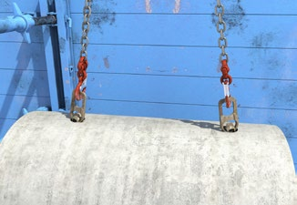
|
Abb. 86 Prinzipskizze Tragmittel, Lastaufnahmemittel, Anschlagmittel |
Abb. 87 Formschlüssig wirkende Lastaufnahmemittel (Kugelkopfanker) |
|
Rechtliche Grundlagen
|
- Betriebssicherheitsverordnung (BetrSichV), §§ 3–6,
- Technische Regeln für Betriebssicherheit (TRBS)
- DGUV Regel 100-500 bzw. 100-501 "Betreiben von Arbeitsmitteln"
- Kap. 2.12 "Betreiben von Erdbaumaschinen"
- DGUV Regel 109-017 "Betreiben von Lastaufnahmemitteln und Anschlagmitteln im Hebezeugbetrieb"
|
|
Weitere Informationen
|
- DGUV Information 201-030 "Merkblatt für Seile und Ketten als Anschlagmittel im Baubetrieb"
- DGUV Information 209-013 "Anschläger"
- DGUV Information 209-061 "Gebrauch von Hebebändern und Rundschlingen aus Chemiefasern"
|
|
Gefährdungen
|
|
Herabfallen von angeschlagenen Lasten durch:
- nicht für die Last geeignete Hebezeuge, Lastaufnahmemittel, Anschlagmittel und Anschlagpunkte
- fehlende Anschlagpunkte
- Lösen des Lastaufnahmemittels
- Versagen des Lastaufnahmemittels/Anschlagmittels
- falsch angeschlagenen Lasten
- herausrutschen von Lasten
Getroffen werden durch schwebende Lasten:
- durch Fehlbedienung des Hebezeuges
- durch Versagen des Hebezeuges
- Verlust der Standsicherheit des Hebezeuges
Zusätzliche Gefährdungen können auch durch den unbefugten Aufenthalt im Gefahrbereich entstehen.
|
|
Maßnahmen
|
|
Gegen diese und weitere mögliche Gefährdungen sind, abhängig von der Gefährdungsbeurteilung, folgende Maßnahmen zu treffen: Betreiben Sie Hydraulikbagger nur dann im Hebezeugeinsatz, wenn diese vom Hersteller dafür vorgesehen sind.
Hydraulikbagger im Hebezeugeinsatz müssen mit einer selbsttätig wirkenden akustischen oder optischen Überlast-Warneinrichtung ausgerüstet sein.
- Ab Baujahr 1996 müssen sie für den Hebezeugeinsatz mit einer Leitungsbruchsicherung am Auslegerzylinder ausgerüstet sein.
- Ab Baujahr 2013 müssen Hydraulikbagger für den Hebezeugeinsatz mit Leitungsbruchsicherungen an jedem Ausleger- und Stielzylinder ausgerüstet sein.
Unterweisen Sie Ihre Maschinenführenden, dass die Überlastwarneinrichtung vor Hebezeugarbeiten in Funktion zu nehmen ist.
Hydraulikbagger mit einer zulässigen Traglast kleiner 1000 kg in der kleinsten, um 360° drehbaren Ausladung bzw. einem Kippmoment kleiner 40000 Nm, die nicht mit Leitungsbruchsicherungen sowie einer Warneinrichtung zur Überlast-Warneinrichtung ausgerüstet sind, dürfen im Hebezeugbetrieb eingesetzt werden, wenn und soweit der Hersteller diesen Einsatz als bestimmungsgemäß erklärt hat.
Seilbagger dürfen im Hebezeugeinsatz nur betrieben werden, wenn sie vom Hersteller dafür vorgesehen sind. Sie müssen dann mit einer Einrichtung zur Lastmomentbegrenzung sowie einem Endschalter für die Hubbewegung ausgerüstet sein. Diese Einrichtungen müssen in Funktion sein.
Achten Sie darauf, dass Hebezeuge mit geeigneten Anschlagpunkten/Lasthaken ausgerüstet sind.
Achten Sie darauf, dass Anschlagpunkte/Lasthaken so an der Arbeitsausrüstung oder anderen Teilen der Maschine angebracht sind, dass:
- ein unbeabsichtigtes Aushängen oder Lösen des Anschlagmittels vermieden wird,
- eine bestmögliche Sichtverbindung zwischen Maschinenführer bzw. Maschinenführerin und Anschläger bzw. Anschlägerin besteht,
- die Last frei hängen kann,
- eine Schädigung des Anschlagmittels durch andere Teile des Hebezeuges z. B. scharfe Kanten vermieden wird,
- Quetsch- und Scherstellen für den Anschläger bzw. die Anschlägerin vermieden werden,
- ein An- und Aushängen des Anschlagmittels leicht und sicher möglich ist.
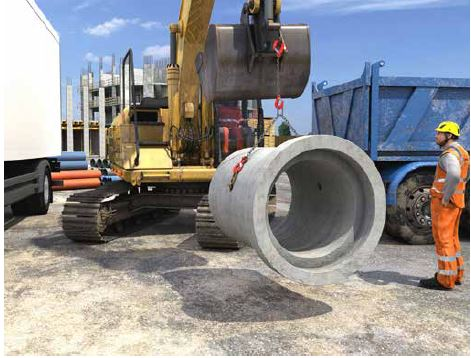
Abb. 88 Transport einer formschlüssig angeschlagenen Last
Beachten Sie beim Nachrüsten von Anschlagpunkten/Lasthaken die Anbauanleitung, die Vorgaben der Hersteller des Hebezeuges und der Arbeitsausrüstung.
Berücksichtigen Sie vor der Auswahl von Lastaufnahme- und Anschlagmitteln, dass diese nur bestimmungsgemäß verwendet werden dürfen. Der bestimmungsgemäße Betrieb ist dann gegeben, wenn
- die Betriebsanleitung des Herstellers und
- die für den Betrieb maßgebenden Vorschriften und Regelwerke
eingehalten werden.
Halten Sie die Betriebsanleitung an der Einsatzstelle vor.
|
3.3.8 Heben und Transportieren von Personen mit mobilen Baumaschinen
Personen sollen nur mit Maschinen und Zusatzausrüstungen gehoben werden, welche vom Hersteller hierfür vorgesehen sind. Abweichungen hiervon sind nur in wenigen Ausnahmefällen unter Einhaltung besonderer Sicherheitsvorkehrungen möglich.
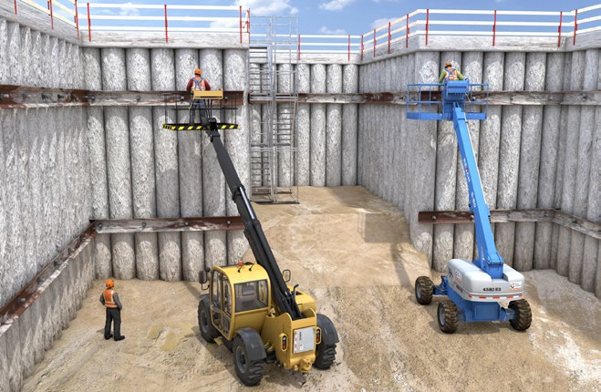
Abb. 89 Hubarbeitsbühne und Teleskopstapler für das Heben von Personen
|
Weitere Informationen
|
- DGUV Information 201-029 "Handlungsanleitung für Auswahl und Betrieb von Arbeitsplattformen an Hydraulikbaggern und Ladern"
- DGUV Information 208-019 "Sicherer Umgang mit fahrbaren Hubarbeitsbühnen"
|
|
Gefährdungen
|
|
Gefährdungen können z. B. sein:
- Absturz/ungewolltes Lösen der Arbeitsplattform/des Personenaufnahmemittels (PAM)
- Kollision der Arbeitsplattform/des PAM mit festen Gegenständen
- Überlastung der Arbeitsplattform/des PAM
- Geräteumsturz z. B. durch:
- nicht ausreichend tragfähigen Untergrund
- mangelnde Abstützung
- Geländeneigung
- Überschreitung des Lastmoments
- Verhaken an festen Bauteilen
- Einquetschen zwischen Arbeitsplattform/PAM und festen Gegenständen
- Herausschleudern bzw. Herausfallen von Personen aus der Arbeitsplattform/PAM z. B. durch:
- Verhaken in der Konstruktion
- den Katapult- bzw. Peitscheneffekt z. B. durch Verfahren mit besetzter Arbeitsplattform/angehobenem PAM im unebenen Gelände
- ungewollte Schrägstellung des PAM durch Verhaken oder außermittiges Aufsetzen
- ungewolltes Kippen der Arbeitsplattform z. B. durch Fehlbedienung
- zu hohe Hub-, Senk- und Schwenkgeschwindigkeit
|
|
Maßnahmen
|
|
Setzen Sie als Unternehmer oder Unternehmerin für das Heben von Personen Maschinen ein, welche vom Hersteller hierfür vorgesehen und entsprechend ausgerüstet sind. Dies sind z. B.:
- Hubarbeitsbühnen
- Teleskopstapler/-lader mit einer Arbeitsplattform als Zusatzausrüstung, wenn diese Kombination vom Hersteller für das Heben von Personen vorgesehen und in der Bedienungsanleitung beschrieben ist.
Verwenden Sie die Maschine/Zusatzausrüstung entsprechend der Bedienungsanleitung des Herstellers.
Stellen Sie den Beschäftigten, die sich in der Arbeitsplattform aufhalten, geeignete Persönliche Schutzausrüstungen gegen Absturz (PSAgA) zur Verfügung. Diese sind zu benutzen und an den vom Hersteller vorgesehenen Anschlagpunkten zu befestigen.
Heben von Beschäftigten mit vom Hersteller hierfür nicht vorgesehenen Arbeitsmitteln
Das Heben von Beschäftigten mit vom Hersteller hierfür nicht vorgesehenen Arbeitsmitteln ist nur ausnahmsweise zulässig. Dies ist z. B. der Fall, wenn der Einsatz von Arbeitsmitteln, die zum Heben von Personen vorgesehen sind, aufgrund örtlicher Gegebenheiten oder des Arbeitsverfahrens nicht eingesetzt werden können. Hier ist ins besondere die TRBS 2121-4 zu beachten.
 Folgende Schutzmaßnahmen sind immer umzusetzen: Folgende Schutzmaßnahmen sind immer umzusetzen:
- Aufsicht durch eine anwesende, besonders eingewiesene Person
- Steuerstand des Arbeitsmittels nicht verlassen, solange die Arbeitsplattform/PAM besetzt ist
- Bergungsplan für den Gefahrenfall
Weitere Schutzmaßnahmen beim Einsatz von hochziehbaren Personenaufnahmemitteln (PAM) sind unter anderem:
- Bereitstellung von PAM, die für diesen Zweck gebaut und auf dem Markt bereitgestellt wurden und mit dem Hebezeug kompatibel sind.
- PAM fest (nur mit Werkzeug lösbar) mit dem Anschlagmittel verbinden.
- Bei Gefahr des Kippens, z. B. durch Verhaken oder Aufsetzen, in offenen Personenaufnahmemitteln PSA gegen Absturz verwenden.
- Tragkraft des Hebezeuges mindestens das 1,5-fache des zulässigen Gesamtgewichtes des PAM.
- Freifalleinrichtungen (z. B. bei Seilbaggern) deaktivieren und mit Schlüsselschalter sichern.
- Hebezeug mit einer Steuerung ausrüsten, die beim Loslassen der Bedienteile alle Bewegungen stillsetzt (Totmannsteuerung).
- Max. Hubgeschwindigkeiten bei Arbeitskörben 0,5 m/s, bei Personenförderkörben im Allgemeinen 1,5 m/s.
- Gefahrloses Verlassen des PAM bei Energieausfall sicherstellen, z. B. durch Ablassen in Ausgangsposition, oder unabhängige Energieversorgung.
- Bei Gefahr des Verhakens des PAM, z. B. in Bohrungen, das Hebezeug mit Zugkraftbegrenzung und Schlaffseilsicherung ausrüsten.
- Lasthaken mit einer Sicherung gegen unbeabsichtigtes Aushängen ausrüsten.
- Sprechkontakt zum Hebezeugführer bzw. zur Hebezeugführerin oder Einweiser/-in sicherstellen.
Der erste Einsatz von PAM auf jeder Baustelle muss der zuständigen Berufsgenossenschaft mindestens 14 Tage vor der Arbeitsaufnahme schriftlich angezeigt werden.
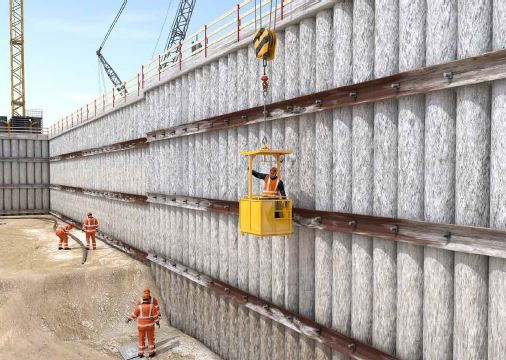
Abb. 90 Hochziehbares Personenaufnahmemittel (PAM)
Weitere Schutzmaßnahmen beim Einsatz von Hydraulikbaggern und Ladern mit Arbeitsplattformen sind unter anderem:
- Freigabe der Kombination zwischen Plattform und Trägergerät, z. B. Bestätigung der Kompatibilität durch die Hersteller.
- Arbeitsplattform zum Heben von Personen mit Hydraulikbaggern und Ladern muss vom Hersteller mit einem CE-Kennzeichen versehen sein.
- Beschreibung der Montage und der bestimmungsgemäßen Verwendung.
- Trägergeräte müssen mit folgenden Einrichtungen ausgerüstet sein:
- Begrenzung der Hub-, Senk- und Kippgeschwindigkeit auf höchstens 0,4 m/s auch im Falle eines Schlauchbruchs
- selbsttätige horizontale Plattformausrichtung
- Notabsenkung (z. B. bei Energieverlust)
- Formschlüssige Verbindung der Arbeitsplattform mit dem Trägergerät.
- Nur erfahrene, zuverlässige, für diesen Einsatz unterwiesene und schriftlich beauftragte Maschinenführende einsetzen.
- Verständigung zwischen Maschinenführenden und Mitarbeitenden auf der Arbeitsplattform gewährleisten.
|
3.3.9 Einsatz von mobilen Baumaschinen in kontaminierten Bereichen
Werden mobile Maschinen in mit Gefahrstoffen kontaminierten Bereichen, z. B. auf Mülldeponien oder Altlaststandorten, eingesetzt, müssen sie hierfür geeignet und ausgerüstet sein. Insbesondere Anlagen zur Atemluftversorgung minimieren das Eindringen von Gefahrstoffen aus belasteter Umgebungsluft in die Fahrerkabine.
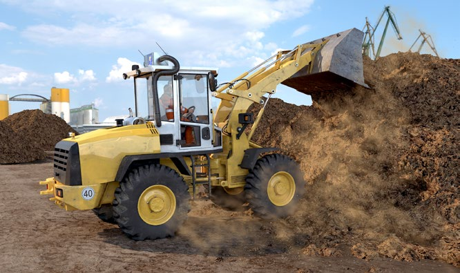
Abb. 91 Radlader mit Filteranlage
|
Rechtliche Grundlagen
|
- Betriebssicherheitsverordnung (BetrSichV), §§ 3–6, 14
- Gefahrstoffverordnung (GefStoffV), §§ 6, 7
- Biostoffverordnung (BiostoffV), §§ 4, 8, 9, 14
- Baustellenverordnung (BaustellV), §§ 2, 3
- Technische Regeln für Gefahrstoffe (TRGS) 524 "Schutzmaßnahmen bei Tätigkeiten in kontaminierten Bereichen"
- Technische Regeln für biologische Arbeitsstoffe (TRBA) 500 "Allgemeine Hygienemaßnahmen: Mindestanforderungen"
- DGUV Regel 104-004 "Kontaminierte Bereiche"
- DGUV Regel 112-190 "Benutzung von Atemschutzgeräten"
|
|
Weitere Informationen
|
- DGUV Information 201-004 "Anlagen zur Atemluftversorgung auf Erdbaumaschinen und Spezialmaschinen des Tiefbaus"
|
|
Gefährdungen
|
|
Werden mobile Maschinen des Tiefbaus in kontaminierten Bereichen eingesetzt, können die Bedienenden mit Gefahr- und Biostoffen insbesondere aus belasteten Böden und Baustoffen sowie Deponiegut in Kontakt kommen.
Gefahr- und Biostoffe können in Form von Gasen, Dämpfen, Stäuben, Aerosolen, Flüssigkeiten etc. in die Fahrerkabine gelangen. Dies geschieht insbesondere durch:
- Undichtigkeiten der Kabine
- nicht geschlossene Türen und/oder Fenster
- die Kabinenbelüftung
- Anhaftungen an Schuhen und Kleidung beim Einsteigen in die Kabine
Gefahr- und Biostoffe können durch Einatmen, Verschlucken oder Hautresorption vom menschlichen Körper aufgenommen werden.
|
|
Maßnahmen
|
|
Erarbeiten Sie auf der Basis des von dem Auftraggeber bzw. der Auftraggeberin oder von dem Bauherrn bzw. der Bauherrin erstellten Arbeits- und Sicherheitsplans (A+S-Plan) eine Gefährdungsbeurteilung.
Erdbaumaschinen (z. B. Radlader, Bagger) und Fahrzeuge dürfen in kontaminierten Bereichen nur eingesetzt werden, wenn sichergestellt ist, z. B. durch Filter- bzw. Druckluftanlagen, dass in der Fahrerkabine
- Arbeitsplatzgrenzwerte bzw. Beurteilungsmaßstäbe von Gefahrstoffen eingehalten werden,
- ausreichend Sauerstoff vorhanden ist,
- Atemluft in ausreichender Menge vorhanden ist und
- das Eindringen von Gefahrstoffen aus der belasteten Umgebung minimiert wird.
Soll im Einzelfall auf die Verwendung von Fahrerkabinen mit Filter- bzw. Druckluftanlagen verzichtet werden, ist dies auf der Grundlage der Gefährdungsbeurteilung zu begründen und in der erforderlichen Anzeige an den zuständigen Unfallversicherungsträger anzugeben.
Für die Fahrerkabine, die Filteranlage, die Filter und die Filterentsorgung oder die Atem-Druckluft-Anlage muss eine vom Hersteller oder Ausrüster aufgestellte Betriebsanleitung (in der Kabine) vorhanden sein.
Sorgen Sie dafür, dass der Bediener oder die Bedienerin anhand dieser Betriebsanleitung unterwiesen wird.
Atemluftversorgung – allgemeine Anforderungen
Unabhängig von der Art der Belüftung ist hinsichtlich der Atemluftversorgung unter anderem Folgendes zu berücksichtigen:
- Erwärmung der Frischluft
- Klimatisierung der Fahrerkabine
- Schwebstofffilter der Filterklasse H13 nach EN 1822
- Für Überdruck geeignete Türen, Fenster und Klappen
- Kontrollanzeige für den Überdruck im Sichtfeld des Maschinenführers oder der Maschinenführerin
- Optische und akustische Warneinrichtungen für relevante Druckveränderungen
- Filter- oder Atem-Druckluft-Anlagen und Klimageräte so anordnen, dass die Sicht des Maschinenführers oder Maschinenführerin dadurch nicht eingeschränkt wird. Sichteinschränkungen müssen ausgeglichen werden. Beachten Sie hierzu als Unternehmerin oder Unternehmer die weiteren Regelungen im Abschnitt "Gefahrbereiche und Sichteinschränkungen beim Betrieb von mobilen Baumaschinen"
- Keine Beeinträchtigungen von:
- Notausstiegen und Zugängen zu Wartungs- und Kontrollstellen durch Filter- oder Atem-Druckluft-Anlage
- von Überrollschutzaufbauten (ROPS, TOPS) und Schutzdächern (FOPS)
- außerhalb der Fahrerkabine angebrachte grün leuchtende Betriebsanzeige
- Zuführung einer Frischluftmenge von mindestens 12 m3 pro Person und Stunde in die Fahrerkabine
Maschinen mit Filteranlagen
Filteranlagen müssen mindestens aus folgenden Bauteilen bestehen (Reihenfolge in Strömungsrichtung): Gebläse, Vorfilter, Schwebstofffilter, Gasfilter, Filteraufnahmegehäuse.
Schätzen Sie die Filterstandzeiten in Abhängigkeit der zu erwartenden Gefahrstoffexposition und der Umgebungsbedingungen ab und legen Sie die Intervalle der jeweiligen Filterwechsel fest. Lassen Sie sich hierbei erforderlichenfalls vom Filterhersteller beraten. Dokumentieren Sie die Filterwechsel im Filterbuch.
Maschinen mit Atem-Druckluft-Anlagen
Im Sichtfeld des Maschinenführers oder Maschinenführerin muss eine Kontrollanzeige für den jeweiligen Druck in den Druckluftflaschen vorhanden sein.
Legen Sie im Weißbereich den Ort für Befüllung der Druckluftflaschen so fest, dass das Ansaugen von kontaminierter Luft vermieden wird.
Betrieb
Treffen Sie Vorkehrungen dafür, dass die Maschine betreten werden kann, ohne dass Kontaminationen in die Fahrerkabine gelangen (z. B. Einsteigen nur im Weißbereich, Reinigen der Zugänge).
 Reparatur, Wartungs- und weitere Arbeiten (z. B. Prüfungen) an mobilen Maschinen des Tiefbaus sollen in Bereichen ohne Kontamination (z. B. Weißbereich) durchgeführt werden. Vorher sind sie auf einem dafür vorgesehenen Platz zu reinigen (Dekontamination). Reparatur, Wartungs- und weitere Arbeiten (z. B. Prüfungen) an mobilen Maschinen des Tiefbaus sollen in Bereichen ohne Kontamination (z. B. Weißbereich) durchgeführt werden. Vorher sind sie auf einem dafür vorgesehenen Platz zu reinigen (Dekontamination).
Organisieren Sie die erforderlichen Prüfungen und Wartungen der Anlagen zur Atemluftversorgung. Dokumentieren Sie dieses.
Treffen Sie Vorkehrungen dafür, dass der Maschinenführer oder die Maschinenführerin bei Not- und Störfällen (z. B. bei Maschinenschaden) den kontaminierten Bereich ohne Gefährdungen verlassen kann (z. B. PSA gegen Kontaminationen in der Fahrerkabine vorhalten).
Beachten Sie hierzu als Unternehmerin oder Unternehmer die weiteren Regelungen im Abschnitt "Qualifikation von Maschinenführern und Maschinenführerinnen".
|
3.3.10 Maschineneinsatz in ganz oder teilweise geschlossenen Arbeitsbereichen
Beim Einsatz von Maschinen und Fahrzeugen mit Verbrennungsmotor, in ganz oder teilweise geschlossenen Arbeitsbereichen, können Beschäftigte krebserzeugenden bzw. giftigen Motorabgasen ausgesetzt sein. Durch emissionsfreie oder emissionsarme Antriebe, Dieselpartikelfilter, Katalysatoren und Lüftungsmaßnahmen können die Beschäftigten geschützt werden.
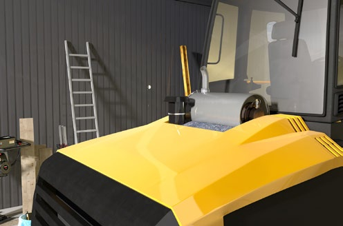
Abb. 92 Radlader mit Dieselpartikelfilter
|
Gefährdungen
|
|
Bauarbeiten in ganz oder teilweise geschlossenen Arbeitsbereichen sind Arbeiten
- in Hallen mit Dach und mindestens zwei Außenwänden,
- in Tiefgaragen oder anderen unter Erdgleiche befindlichen Räumen, die nicht als Bauarbeiten unter Tage gelten,
- in Zelten und Einhausungen mit Dach und mindestens zwei Außenwänden,
- in fertiggestellten Tunnelbauwerken,
- in Schächten oder Baugruben mit einer Grundfläche < 100 m2,
- in Gräben und grabenähnlichen Arbeitsräumen, die mehr als schultertief sind und
- in Räumen.
Werden bei diesen Bauarbeiten Maschinen und Fahrzeuge mit Verbrennungsmotoren eingesetzt, sind die Beschäftigten den in den Abgasen enthaltenen Gefahrstoffen ausgesetzt.
Dieselmotoren
In den Abgasen von Dieselmotoren sind partikel- und gasförmige Gefahrstoffe enthalten. Die Dieselrußpartikel sind krebserzeugend. Die gasförmigen Anteile enthalten insbesondere atemwegsreizende Stickoxide (NO und NO2).
Benzinmotoren
In den Abgasen von Benzinmotoren sind nur gasförmige Gefahrstoffe enthalten. Maßgeblich ist hier das Kohlenmonoxid (CO), welches bei Überschreitung des Arbeitsplatzgrenzwertes zu Vergiftungen (Schwindel, Übelkeit, Bewusstlosigkeit) bis hin zum Tod führen kann.
|
|
Maßnahmen
|
|
Planen Sie als Unternehmer bzw. Unternehmerin vor Beginn der Arbeiten die notwendigen Maßnahmen zum Schutz der Beschäftigten vor Motorabgasen.
Substitution
Vorrangig ist der Einsatz emissionsfreier Antriebe (z. B. Akku- oder Elektroantrieb) bzw. emissionsarmer Antriebe (z. B. Gasmotor) zu prüfen.
Technische Maßnahmen
Ist eine Substitution nicht möglich, ist der Einsatz von Dieselpartikelfiltern oder von Katalysatoren (Benzinmotoren) zu prüfen.
Bei Maschinen die nicht bewegt werden (z. B. Betonpumpen, Stromerzeuger), können in vielen Fällen die Abgase am Auspuff erfasst und ins Freie abgeleitet werden.
Im Rahmen der Gefährdungsbeurteilung ist in Abhängigkeit vom Umfang des Maschineneinsatzes (Nennleistung der gleichzeitig eingesetzten Maschinen und Dauer des Einsatzes), der Größe/Volumen des Arbeitsbereiches, sowie der natürlichen Lüftung immer zu ermitteln, ob zusätzlich lüftungstechnische Maßnahmen erforderlich sind.
Organisatorische Maßnahmen
Sorgen Sie dafür, dass Maschinen nur im Rahmen der herstellerseitig vorgesehenen Einsatzgrenzen, z. B. zulässige Grabenabmessungen, verwendet werden.
Unterweisen Sie Ihre Beschäftigten, dass das unnötige Laufenlassen (z. B. im Leerlaufbetrieb) oder das starke Beschleunigen der Motoren (z. B. beim Anfahren) zu unterlassen ist. Weiterhin ist der unnötige Aufenthalt von Beschäftigten in Arbeitsbereichen, in denen Abgase freigesetzt werden, zu vermeiden.
Zusätzliche Bestimmungen für den Einsatz von Dieselmotoren
Dieselbetriebene Maschinen sind vorrangig mit einem Dieselpartikelfilter (DPF) auszurüsten.
Auswahl des Dieselpartikelfilters:
- nur geprüfte DPF verwenden: Prüfung nach BAFU-, FAD-Qualitätssiegel, VERT-Vorgaben oder UNECE Richtlinie 132
- Handlungshilfe: Empfehlungsliste zur Nachrüstung von dieselbetriebenen Arbeitsmitteln mit Dieselpartikelfilter für den Einsatz in ganz oder teilweise geschlossenen Arbeitsbereichen (siehe www.bgbau.de)
Montage des Dieselpartikelfilters:
- DPF so montieren, dass keine Sichtfeldeinschränkungen für den Maschinisten entstehen. Ansonsten sind Sichthilfsmittel, wie z. B. Kamera-Monitor-Systeme (KMS), nachrüsten.
- Schutzaufbauten (z. B. ROPS, TOPS) dürfen bei der Montage, z. B. durch Anbohren und Anschweißen, nicht beschädigt oder geschwächt werden.
- DPF so montieren, dass durch heiße Oberflächen keine Gefährdungen für den Bediener oder die Bedienerin und die Maschine (Maschinenbrand) entstehen.
- Fahrzeuge mit Straßenzulassung und Motoren ab der Abgasstufe EURO fünf benötigen keinen DPF.
Zusätzliche Bestimmungen für den Einsatz von Benzinmotoren
- Benzingetriebene Maschinen sind vorrangig mit einem Katalysator (KAT) auszurüsten.
- CO-Filter als Atemschutz sind beim Einsatz von Benzinmotoren auf Baustellen nicht geeignet, da diese
- lediglich eine sehr kurze Standzeit haben,
- einen hohen Atemwiderstand haben,
- nur als Kombinationsfilter verfügbar sind,
- die Wahrnehmung eines Filterdurchschlags, auf Grund der Geruchslosigkeit des CO, nicht ermöglichen.
- Überprüfen Sie im Rahmen der Gefährdungsbeurteilung, ob zusätzlich lüftungstechnische Maßnahmen erforderlich sind.
Zusätzliche Bestimmungen für Verdichtungsarbeiten in mehr als schultertiefen Gräben und grabenähnlichen Arbeitsräumen
- Zur Vermeidung/Minimierung von Gefahrstoffen aus Motorabgasen kommen z. B. folgende Maßnahmen in Betracht:
- Anbauverdichter oder ferngesteuerte Geräte zur Vermeidung des Personaleinsatzes im Graben einsetzen.
- Geräte mit emissionsfreien (Elektro- oder Akkuantrieb) Antriebstechniken einsetzen.
- Geräte mit Fernsteuerung einsetzen.
- Geräte mit emissionsarmen Antriebstechniken einsetzen, dabei Einsatzgrenzen des Herstellers einhalten.
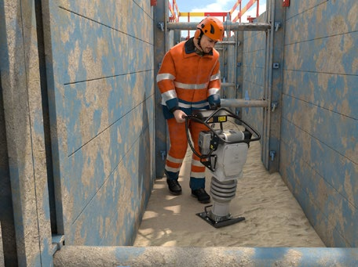
Abb. 93 Verdichtungsarbeiten mit einem Akku betriebenen Stampfer
Auswahl emissionsarmer Antriebstechniken:
- Empfehlungsliste für Stampfer und Rüttelplatten, siehe www.bgbau.de.
- Kann keine der vorgenannten Maßnahmen umgesetzt werden, ist beim Einsatz von dieselbetriebenen handgeführten Verdichtungsgeräten ohne DPF Atemschutz (Halbmaske mit P3 Filter) zu tragen.
|
3.3.11 Montage, Umrüstung, Wartung, Instandsetzung von Maschinen des Tiefbaus
Maschinen müssen regelmäßig gewartet und instandgesetzt werden, damit während der gesamten Verwendungsdauer ein sicheres und bestimmungsgemäßes Arbeiten gewährleistet ist. Bei Instandhaltungs-, Montage- oder Umrüstungsarbeiten sind die Angaben der Hersteller zu berücksichtigen.
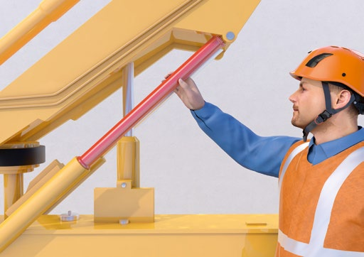
Abb. 94 Formschlüssige Sicherung des Hubgerüstes durch Abstützmanschette
|
Gefährdungen
|
|
Folgende Gefährdungen können z. B. entstehen:
- Absturz von Personen, z. B. beim Betanken, Wechseln von Luftfiltern
- Absturz von Maschinenteilen nach unsachgemäßem Lösen von Verbindungen
- Abrutschen von Maschinen oder Maschinenteilen von Auflagern, Böcken, Wagenhebern
- Umsturz von Maschinen nach Demontage von Maschinenteilen, z. B. Kontergewichten
- Gequetscht werden von Maschinen, z. B. durch unbeabsichtigtes/beabsichtigtes Ingangsetzen
- Eingezogen werden bei Arbeiten an drehenden Teilen
- Plötzliches Absacken von Maschinenteilen durch unsachgemäßes Demontieren von Hydraulikschlauchleitungen
- Herausspritzen von unter Druck stehenden Flüssigkeiten, z. B. Hydrauliköl bei unsachgemäßem Öffnen von Hydrauliksystemen
Gefährdungen durch Umrüstung bzw. Veränderung von Maschinen:
- Umsturzgefährdungen durch zu hohes Gewicht der Anbauteile, z. B. zu schwere Abbruchzangen
- Einzugsgefährdungen durch drehende Teile, z. B. bei Schaufelseparatoren
- Sichteinschränkungen, z. B. durch nachträglich angebaute Filteranlagen oder großvolumige Radladerschaufeln
|
|
Maßnahmen
|
|
Stellen Sie als Unternehmerin oder Unternehmer sicher, dass Maschinen nur von einer von Ihnen bestimmten Person unter Einhaltung der Betriebsanleitung der Hersteller auf-, um-, abgebaut, instandgesetzt und gewartet werden.
Absturz von Personen:
- Zur Verfügung stellen von geeigneten Zugängen zu den Wartungsstellen, z. B. Podestleitern.
- Nutzung der vom Hersteller vorgesehenen Absturzsicherungen, z. B. Klappgeländer.
Abstürzen/Abrutschen von Maschinenteilen
- Aufbocken/Abstützen von Maschinen bzw. Maschinenteilen z. B. durch Unterbauten, Abstützböcke und Hubgeräte, die ein Abrutschen verhindern.
- Maschine gegen gefahrbringende Bewegungen sichern, z. B. durch Abstützungen der Arbeitseinrichtungen.
- Abstützungen der Arbeitseinrichtungen von Maschinen können z. B. bei der Montage von Gitterauslegern, Arbeiten an Knickauslegern, Hubgerüsten und Kübelschneiden notwendig sein.
- Bei Hydraulikgeräten kann die Abstützung der Arbeitseinrichtung durch Begrenzung der Hydraulikkolbenbewegung, z. B. durch Abstützmanschetten erfolgen.
- Formschlüssige Festlegung von Knickgelenken, z. B. durch Arretierungen, Steckbolzen, Klinken.
Arbeiten am Hydrauliksystem
Sorgen Sie dafür, dass
- vor Arbeiten an Hydrauliksystemen Druckspeicher und vorgespannte Ölbehälter entsprechend Bedienungsanleitung abgesperrt und drucklos gemacht werden;
- hydraulisch hochgehaltene Maschinenteile, Ausleger etc. vor Beginn der Instandsetzungsarbeiten abgelassen, mittels vorhandener Verriegelung gesichert oder sicher abgestützt werden;
- Restdrücke durch eingespannte Flüssigkeitsvolumina, z. B. zwischen Ventilen und Zylindern durch Stellhebel- bzw. Ventilbetätigung entlastet werden.

Abb. 95 Nachträglich montierter DPF ohne Beeinträchtigung der Sicht

Abb. 96 Sichteinschränkung durch nachgerüsteten DPF wird durch technisches Hilfsmittel ausgeglichen, hier durch Kamera-/Monitorsystem.
Montage, Demontage, Umrüstung bzw. Veränderung von Maschinen:
- Vermeiden von zusätzlichen Sichteinschränkungen durch Montage von nachträglichen Anbauten, z. B. Filteranlagen, an Stellen, welche die Sicht nicht behindern.
- Für jede Änderung einer Maschine muss eine dokumentierte Gefährdungsbeurteilung durchgeführt werden. Zeigt das Ergebnis, dass neue/zusätzliche Gefährdungen zu erwarten sind, sind Sie als Unternehmerin oder Unternehmer verpflichtet, die Maschine durch entsprechende Schutzmaßnahmen nach dem Stand der Technik wieder sicher zu machen.
- Stellen Sie für die Montage, Demontage, Umrüstung bzw. Veränderung von Maschinen geeignete und sichere Einrichtungen, Werkzeuge und Hilfsmittel zur Verfügung.
- Zur Sicherstellung der Standsicherheit sind bei der Auswahl von auswechselbaren Ausrüstungen die Herstellerangaben des Grundgerätes zu beachten, z. B. zulässiges Gewicht von Anbaugeräten.
- Vermeidung von Einzugsgefährdungen durch drehende Teile durch
- Auswahl von Anbaugeräten mit entsprechenden Schutzeinrichtungen,
- Vorgaben für den Betrieb auf der Baustelle, z. B. Absperrung des Gefahrbereichs.
- Ausgleich von Sichteinschränkungen, die durch nachträglich montierte Anbauten entstanden sind, durch technische Maßnahmen, z. B. Kamera-/Monitorsysteme.
- Überprüfen Sie bei Änderungen an der Maschine, ob es sich um prüfpflichtige Änderungen handelt und ob Herstellerpflichten zu beachten sind.
|
3.3.12 Prüfung von Arbeitsmitteln – Prüffristen
Durch die regelmäßige Prüfung erhalten Sie als Unternehmerin oder Unternehmer alle Arbeitsmittel (z. B. Maschinen, Geräte, Fahrzeuge) während der gesamten Verwendungsdauer in einem sicheren Zustand. Die Angaben der Hersteller liefern Ihnen hierbei wichtige Hinweise.
Abb. 97 Kleben der Prüfplakette
|
Weitere Informationen
|
- DGUV Information 203-070 "Wiederkehrende Prüfungen ortsveränderlicher elektrischer Betriebsmittel – Fachwissen für den Prüfer"
- DGUV Information 203-071 "Wiederkehrende Prüfungen ortsveränderlicher elektrischer Betriebsmittel – Organisation durch den Unternehmer"
- DGUV Grundsatz 314-003 "Prüfung von Fahrzeugen durch Sachkundige"
|
|
Gefährdungen
|
|
Wenn nicht geprüfte Arbeitsmittel eingesetzt werden, können z. B. folgende Gefährdungen entstehen:
- Maschinenumsturz durch defekte Überlastabschalt- oder -warneinrichtung
- Herausfallen des Fahrers bzw. der Fahrerin aus der Maschine aufgrund defekter Fahrerrückhalteeinrichtung (z. B. Sicherheitsgurt)
- Lastabsturz durch
- defekte Lastaufnahmemittel, z. B. Tragmittel ohne Hakensicherung,
- defekte Schnellwechseleinrichtung,
- Überfahren/angefahren/gequetscht werden durch defekte Bremsen,
- eingezogen werden durch fehlende oder defekte Schutzeinrichtung z. B. Abdeckung von drehenden Teilen,
- angefahren/überfahren/gequetscht werden wegen Sichteinschränkungen aufgrund defekter oder fehlender Kamera-Monitor-Systeme oder Spiegel,
- Gesundheitliche Gefahren durch Motorabgase aufgrund defekter oder fehlender Abgasnachbehandlungssysteme z. B. Partikelfilter bei Dieselmotoren.
|
|
Maßnahmen
|
|
Vorgeschriebene Mindestprüffristen
Berücksichtigen Sie für Krane und Flüssiggasanlagen die vorgeschriebenen Mindestprüffristen.
Prüfung vor Inbetriebnahme
Arbeitsmittel, deren Sicherheit von den Montagebedingungen abhängen, sind vor der erstmaligen Verwendung von einer zur Prüfung befähigten Person zu prüfen. Die Prüfung umfasst Folgendes:
- die Kontrolle der vorschriftsmäßigen Montage oder Installation und der sicheren Funktion,
- die rechtzeitige Feststellung von Schäden,
- die Feststellung, ob die getroffenen sicherheitstechnischen Maßnahmen wirksam sind. Ausgenommen hiervon sind solche Prüfungen, die bereits vom Hersteller im Zuge der Konformitätsbewertung durchgeführt worden sind.
Die Prüfung muss vor jeder Inbetriebnahme nach einer Montage stattfinden.
Festlegung der Prüffristen durch die Unternehmerin bzw. den Unternehmer
Die Prüffrist ist der festgelegte Zeitraum zwischen zwei Prüfungen. Legen Sie als Unternehmerin oder Unternehmer die Prüffrist anhand der Gefährdungsbeurteilung so fest, dass die Arbeitsmittel nach Ihren betrieblichen Erfahrungen im Zeitraum zwischen zwei Prüfungen in einem sicheren Zustand erhalten werden. Werden Arbeitsmittel im Einschichtbetrieb benutzt, hat sich bei vielen Arbeitsmitteln ein jährlicher Prüfabstand bewährt. Beim Mehrschichtbetrieb können Prüfungen in kürzeren Zeitabständen erforderlich sein.

Abb. 98 Die Prüfplakette weist auf den nächsten Prüftermin hin
|
| Kran |
Prüfung nach der Montage, Installation und vor der ersten Inbetriebnahme |
Wiederkehrende Prüfung |
| Turmdrehkrane |
zur Prüfung befähigte Person |
jährlich durch eine zur Prüfung befähigte Person und alle 4 Betriebsjahre, im 14. und 16. Betriebsjahr und danach jährlich durch einen Prüfsachverständigen |
| Fahrzeugkrane |
Prüfung entfällt |
jährlich durch eine zur Prüfung befähigte Person und alle 4 Betriebsjahre, im 13. Betriebsjahr und danach jährlich durch einen Prüfsachverständigen |
| Lkw-Ladekrane |
Prüfung entfällt |
jährlich durch eine zur Prüfung befähigte Person
Lkw-Anbaukrane Prüfung entfällt jährlich durch eine zur Prüfung befähigte Person und alle 4 Betriebsjahre durch einen Prüfsachverständigen |
Tabelle 8 Prüffristen und Prüfzuständigkeiten für bestimmte Krane
| Arbeitsmittel |
Prüffrist |
Prüfumfang |
| Anschlagmittel, Lastaufnahmemittel und Tragmittel |
1 mal pro Jahr |
Zustand der Bauteile, Einrichtungen, Wirksamkeit der Schutzeinrichtungen |
| Hebebänder mit aufvulkanisierter Umhüllung |
1 mal pro Jahr
alle 3 Jahre |
Zustand der Bauteile
Drahtbrüche und Korrosion |
| Rundstahlketten |
1 mal pro Jahr
alle 3 Jahre |
Zustand der Bauteile Rissfreiheit |
| Elektrische Arbeitsmittel auf Baustellen (ortsveränderlich – soweit benutzt) auch: Verlängerungs- und Geräteanschlussleitung |
alle 3 Monate bei hohen Beanspruchungen, alle 6 Monate bei normalem Betrieb
bei Fehlerquote < 2 %: mindestens 1 mal pro Jahr |
Prüfung nach den geltenden elektrotechnischen Regeln
Wird bei den Prüfungen eine Fehlerquote < 2 % erreicht, kann die Prüffrist auf die in der Spalte "Prüffrist" angegebenen Fristen verlängert werden. Bei der Berechnung der Fehlerquote ist darauf zu achten, dass nur Arbeitsmittel aus gleichen bzw. vergleichbaren Bereichen herangezogen werden. |
| Erd- und Straßenbaumaschinen, Spezialtiefbaumaschinen, Flurförderzeuge, Hubarbeitsbühnen und Teleskoplader/-stapler (Telehandler), Maschinen und Geräte des Rohrleitungsbaus, Schwimmende Geräte, Stetigförderer |
1 mal pro Jahr |
Zustand der Bauteile und Einrichtungen, Vollständigkeit und Wirksamkeit der Befehls- und Sicherheitseinrichtungen |
| Grabenverbaugeräte |
1 mal pro Jahr |
Zustand der Bauteile und Einrichtungen |
| Tauchgeräte |
1 mal pro Jahr |
Zustand und Funktionsfähgkeit der Bauteile, Vollständigkeit und Wirksamkeit der Sicherheitseinrichtungen |
Tabelle 9 Bewährte Prüffristen für wiederkehrende Prüfungen/Überprüfungen
3.3.13 Prüfung von Arbeitsmitteln – Prüfumfang, Prüfperson
Legen Sie als Unternehmerin oder Unternehmer im Rahmen der Gefährdungsbeurteilung unter anderem auch den Prüfumfang für die Prüfung von Arbeitsmitteln fest. Auch die Auswahl und Beauftragung der zur Prüfung befähigten Personen erfolgt durch Sie. Organisieren Sie in diesem Zusammenhang auch die Kontrolle von Arbeitsmitteln vor der jeweiligen Verwendung.
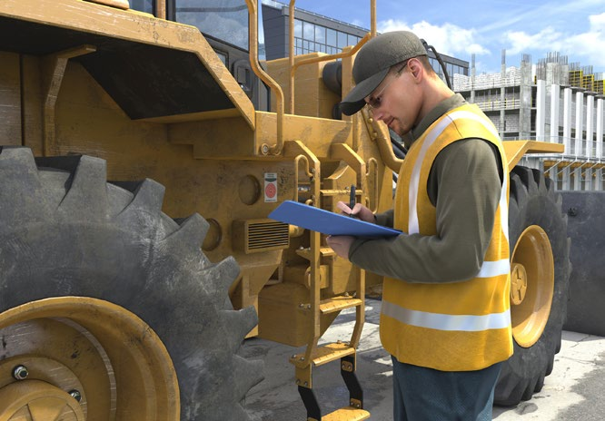
Abb. 99 Prüfung eines Radladers
|
Gefährdungen
|
|
Wenn Arbeitsmittel von nicht ausreichend qualifizierten Personen und in zu geringem Umfang geprüft werden, können Mängel übersehen werden. Hierdurch besteht die Gefährdung, dass unsichere Arbeitsmittel eingesetzt werden und es deshalb im späteren Betrieb zu Unfällen kommt.
|
|
Maßnahmen
|
|
Festlegung des Prüfumfanges
Die Prüfung eines Arbeitsmittels umfasst
- die Ermittlung des Istzustandes (bei der Prüfung vorhandener Zustand des Arbeitsmittels),
- den Vergleich des Istzustandes mit dem Sollzustand (in der Regel Neuzustand eines Arbeitsmittels) sowie
- die Bewertung der Abweichung des Istzustandes vom Sollzustand (Feststellung und Bewertung von Mängeln).
Hieraus ergibt sich der Umfang der erforderlichen Instandhaltungsmaßnahmen.
Es wird zwischen der Ordnungsprüfung (formalen Prüfung) und der technischen Prüfung unterschieden. Bei der Ordnungsprüfung werden insbesondere Sachverhalte überprüft z. B.:
- Sind die erforderlichen Prüfparameter definiert (Prüfumfang, Prüffrist)?
- Sind die notwendigen Unterlagen (z. B. Betriebsanleitung) vorhanden?
- Stimmen die technischen Unterlagen mit der Ausführung überein?
- Ist die Beschaffenheit des Arbeitsmittels oder die Betriebsbedingung seit der letzten Prüfung geändert worden?
Bei der technischen Prüfung werden insbesondere sicherheitstechnische Merkmale überprüft. Hierbei handelt es sich um eine Sicht- und Funktionsprüfung mit begrenzter Demontage. Die Prüfung eines Arbeitsmittels kann z. B. umfassen:
- Sichtprüfung, z. B.
- auf Risse im Ausleger
- des Fahrwerks
- Funktions- und Wirksamkeitsprüfung, z. B.
- der Überlastwarneinrichtung
- der Beleuchtung
- Prüfung mit Mess- und Prüfmitteln, z. B.
- Hydraulikdruck mittels externen Messgeräts
- zerstörungsfreie Prüfung, z. B.
- Risseprüfung einer Anschlagkette
 Auswahl von zur Prüfung befähigten Personen Auswahl von zur Prüfung befähigten Personen
Wählen Sie als Unternehmerin oder Unternehmer die zur Prüfung befähigte Person aus und beauftragen Sie diese am besten schriftlich.
Eine zur Prüfung befähigte Person verfügt durch ihre Berufsausbildung, ihre Berufserfahrung und ihre zeitnahe berufliche Tätigkeit über die erforderlichen Kenntnisse zur Prüfung von Arbeitsmitteln. In Abhängigkeit von der Komplexität der Prüfaufgabe (Prüfumfang, Nutzung bestimmter Messgeräte) können die erforderlichen Fachkenntnisse variieren. Für verschiedene zu prüfende Arbeitsmittel können Sie unterschiedliche zur Prüfung befähigte Personen bestellen, z. B. für die Prüfung von
- Kranen,
- Erdbaumaschinen,
- Lastaufnahmemitteln,
- elektrischen Betriebsmitteln.
Sie als Unternehmerin oder Unternehmer können Prüfungen auch extern vergeben.
Berufsausbildung
Die zur Prüfung befähigte Person muss eine Berufsausbildung abgeschlossen haben, oder vergleichbare Qualifikationsnachweise vorweisen.
Berufserfahrung
Die zur Prüfung befähigte Person kennt aufgrund ihrer Berufserfahrung die Funktions- und Betriebsweise der Arbeitsmittel im notwendigen Umfang. Durch Teilnahme an Prüfungen von Arbeitsmitteln hat sie Erfahrungen über die Durchführung der anstehenden Prüfung oder vergleichbarer Prüfungen gesammelt. Sie hat die erforderlichen Kenntnisse im Umgang mit Prüfmitteln sowie hinsichtlich der Bewertung von Prüfergebnissen erworben.
Zeitnahe berufliche Tätigkeit
Zur zeitnahen beruflichen Tätigkeit gehört die Durchführung von mehreren Prüfungen pro Jahr (Erhalt der Prüfpraxis).
Kontrolle durch die Maschinenführerin bzw. den Maschinenführer
Sorgen Sie als Unternehmerin oder Unternehmer dafür, dass Arbeitsmittel
- vor ihrer jeweiligen Verwendung durch Inaugenscheinnahme und erforderlichenfalls durch eine Funktionskontrolle auf offensichtliche Mängel kontrolliert werden
und
- Schutz- und Sicherheitseinrichtungen einer regelmäßigen Funktionskontrolle unterzogen werden.
Hierzu gehört unter anderem:
- Sichtprüfung auf augenfällige Mängel,
- die ordnungsgemäße Anbringung und Funktion der Schutzeinrichtungen, z. B. Abdeckung zum Schutz vor drehenden Teilen
- Funktionsprüfung:
- der Anzeigen und Kontrolleinrichtungen,
- Bedienelemente, z. B.: Stellteile, Schalter, Pedale,
- Bremsen (auch Handbremse),
- Sicherheits- und Warneinrichtungen z. B.: Stellteile mit Selbstrückstellung, Not-Befehlseinrichtungen (Not-Aus), Endschalter.
Während des Betriebs hat die Maschinenführerin bzw. der Maschinenführer den Zustand der Maschine auf augenfällige Mängel hin zu beobachten. Werden Mängel festgestellt, sind diese dem bzw. der Aufsichtführenden zu melden. Bei einem Personalwechsel sind die Mängel auch dem nachfolgenden Bedienpersonal mitzuteilen.
Bei Mängeln, die die Betriebssicherheit der Maschine gefährden, muss deren Betrieb bis zur Beseitigung der Mängel eingestellt werden.
|